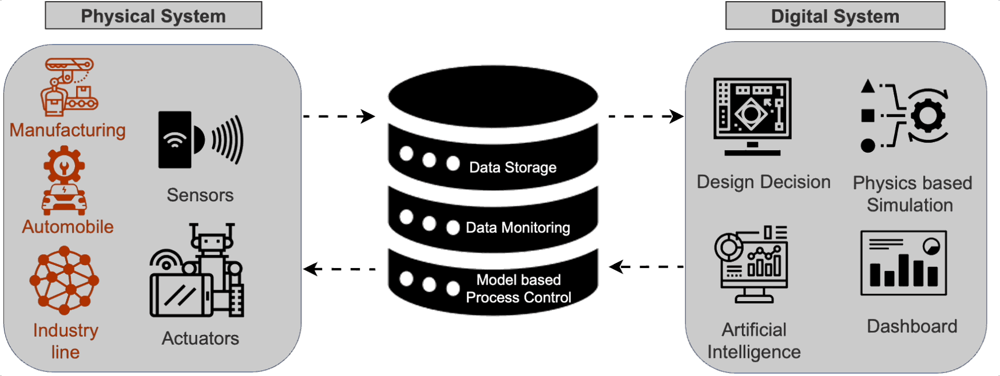

What is a Digital Twin?
Vispi Karkaria • August 7, 2024
In the evolving landscape of technology and industry, the term "digital twin" has emerged as a key concept driving innovation and efficiency. But what exactly is a digital twin, and how does it impact various sectors?
Understanding Digital Twins
A digital twin is a virtual replica of a physical object, system, or process. This digital counterpart is created using data from the physical entity and advanced simulation techniques, allowing it to mirror the real-world counterpart in real-time. The concept extends beyond mere static models; digital twins are dynamic, continuously updated with data from sensors and other inputs, enabling them to reflect changes, predict outcomes, and optimize performance.
The diagram below illustrates the components and interactions within a digital twin system:

The Components of a Digital Twin
1. Physical System: This includes the real-world objects or systems being replicated, such as manufacturing equipment, automobiles, and industrial lines.
- Sensors: Devices that collect real-time data from the physical system, monitoring various parameters like temperature, pressure, and movement.
- Actuators: Components that can interact with the physical system to influence its operation, such as motors and control valves.
2. Data Storage and Monitoring: The collected data is stored and continuously monitored to keep the digital twin updated. This data is crucial for accurate representation and analysis.
- Data Storage: Centralized repositories where sensor data is accumulated.
- Data Monitoring: Real-time tracking and analysis of the data to detect anomalies, predict failures, and ensure optimal performance.
3. Digital System: The virtual counterpart that processes the data and provides actionable insights.
- Design Decision: Utilizing data and simulations to make informed design choices, optimizing performance, and reducing costs.
- Physics-Based Simulation: Using mathematical models to simulate the physical behavior of the system, enabling predictive analysis and optimization.
- Artificial Intelligence: Leveraging AI algorithms to analyze data, identify patterns, and make predictions.
- Dashboard: Visual interfaces that present data and insights in an accessible format, aiding decision-making.
Applications of Digital Twins
Digital twins have a wide range of applications across various industries:
- Manufacturing: In manufacturing, digital twins are used to monitor equipment, predict failures, and optimize production processes. For example, a digital twin of a production line can simulate different scenarios to identify the most efficient workflow, reducing downtime and improving output.
- Healthcare: In healthcare, digital twins of patients can be created to personalize treatment plans, simulate surgeries, and monitor health conditions in real-time, leading to better patient outcomes.
- Smart Cities: Urban planners use digital twins of cities to manage infrastructure, optimize traffic flow, and improve public services. These models help in simulating the impact of new developments and in making data-driven decisions.
- Automotive: Automotive manufacturers create digital twins of vehicles to test designs, predict maintenance needs, and enhance vehicle performance. This approach helps in reducing the time and cost associated with physical prototyping.
- Energy: In the energy sector, digital twins of power plants, wind turbines, and other assets are used to monitor performance, predict maintenance needs, and improve energy efficiency.
Benefits of Digital Twins
- Improved Decision-Making: By providing a detailed and real-time view of the physical entity, digital twins enable better and faster decision-making.
- Predictive Maintenance: Digital twins can predict equipment failures before they occur, allowing for proactive maintenance and reducing downtime.
- Enhanced Efficiency: Optimizing operations and processes using digital twins can lead to significant efficiency gains and cost savings.
- Innovation: Digital twins facilitate experimentation and innovation by allowing companies to test new ideas and strategies in a virtual environment before implementing them in the real world.
- Risk Management: They help in identifying potential risks and mitigating them by simulating various scenarios and their outcomes.
Challenges and Future Directions
Despite their advantages, implementing digital twins comes with challenges. These include the high cost of setup, the need for accurate and high-quality data, and the complexity of integrating various technologies. However, as technology continues to advance, these challenges are becoming more manageable.
The future of digital twins is promising, with developments in artificial intelligence, machine learning, and IoT driving their evolution. As digital twins become more sophisticated, their ability to provide deeper insights and more accurate predictions will only improve, making them an indispensable tool across industries.
Conclusion
Digital twins represent a significant leap forward in how we understand and interact with the physical world. By creating a virtual counterpart that mirrors and predicts the behavior of real-world entities, digital twins are transforming industries and driving the next wave of technological innovation. As we continue to harness the power of data and advanced analytics, the potential of digital twins will only continue to expand, opening up new possibilities for efficiency, innovation, and growth.